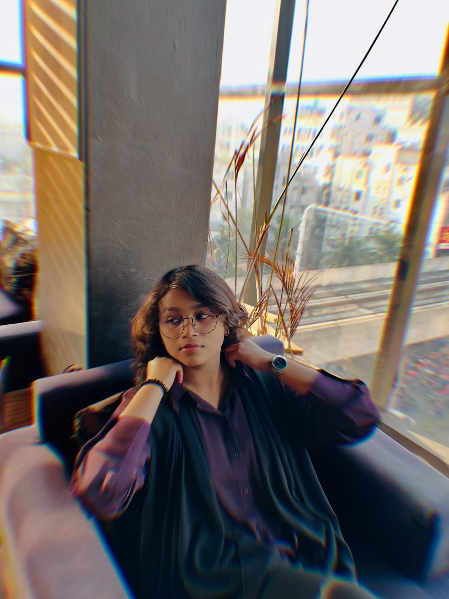

Programming
C · C++ · Java
Programming fundamentals, logic, data structures and object-oriented concepts.SOFTWARE ENGINEERING STUDENT · DIU
I'm Oishi Gain — exploring the world of software, AI-assisted game testing and competitive gaming. I enjoy learning how technology works and how people experience it.

01 — INTRODUCTION
I am a Software Engineering student at Daffodil International University with an interest in the intersection of technology, interactive experiences and gaming.
My academic journey helps me build a foundation in programming, problem-solving, databases, web technologies and operating systems. Outside the classroom, I have been involved in AI-related game testing since 2023 and DIU esports event activities.
I see both sides as connected: software is not only about writing code; it is also about understanding systems, testing experiences and working with people.
02 — ACADEMIC SIDE
My current learning areas and the tools I have been introduced to through coursework and practice.
C · C++ · Java
Programming fundamentals, logic, data structures and object-oriented concepts.HTML · CSS · JavaScript
Building page structures, styling responsive layouts and adding basic interactivity.SQL · MySQL concepts
Relational databases, ER diagrams, normalization and queries.Linux · Git basics · VS Code
Command-line practice, development tools and learning version control.AI-assisted workflows
Using AI for brainstorming, learning support, code explanations and debugging, with human review.Analysis · Design · Testing
System analysis, diagrams, documentation and structured problem-solving.Skill levels are intentionally not represented as expert ratings. This portfolio describes areas I have studied and continue to develop.
03 — SELECTED ACADEMIC WORK
A selection of academic work and project experience. Details can be expanded as each project is finalized.
An academic project concept focused on connected home devices, monitoring and more efficient energy use. My related coursework involved understanding the system, its users, requirements and design diagrams.
This portfolio is a practical web development assignment built with HTML, CSS and JavaScript. It brings together my academic interests and esports experience in one responsive website.
Project descriptions should be updated to match your exact contribution and final project scope before submission.
04 — GAMING SIDE
Gaming is more than play for me. It is a space to observe systems, test experiences, collaborate and learn under pressure.
Involved in AI-related game testing since 2023. This experience has developed my curiosity about game behaviour, player experience and quality.
Participated in DIU esports event management, contributing to the coordination and delivery of gaming activities.
Participated in a Valorant LAN gaming experience at Hero Gaming Cafe — an opportunity to experience competitive play in a local gaming environment.
Gaming setup and LAN photographs can be added in the assets folder; see README.
05 — MY JOURNEY
Began exploring game testing and AI-related game experiences.
Developing foundations in programming, software concepts, databases and web technologies.
Combining technical learning with event involvement and competitive gaming interests.
06 — CONTACT
Interested in technology, game testing, esports or collaboration? Feel free to reach out.
Replace the sample email and profile links with your real accounts before publishing.